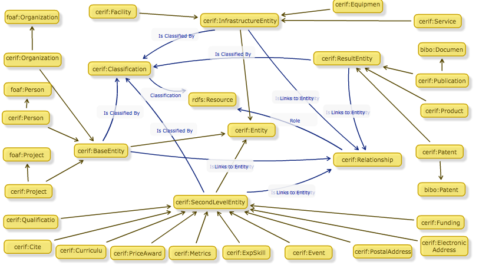

|
 |
||||
The Common European Research Information Format Ontology
|
Copyright © 2013 EuroCRIS |
|
.gif)
 This work is licensed under a Creative Commons Attribution-NoDerivs 3.0 Unported License. This copyright applies to the Common European Research Information Format (CERIF) Ontology Specification
and accompanying documentation in RDF. Permissions beyond the scope of this license may be available at http://www.eurocris.org
Regarding underlying technology, the Common European Research Information Format (CERIF) Ontology uses W3C's RDF technology, an
open Web standard that can be freely used by anyone.
This work is licensed under a Creative Commons Attribution-NoDerivs 3.0 Unported License. This copyright applies to the Common European Research Information Format (CERIF) Ontology Specification
and accompanying documentation in RDF. Permissions beyond the scope of this license may be available at http://www.eurocris.org
Regarding underlying technology, the Common European Research Information Format (CERIF) Ontology uses W3C's RDF technology, an
open Web standard that can be freely used by anyone.
Abstract
The Common European Research Information Format (CERIF) Ontology Specification provides basic concepts and properties for describing research information as semantic data. This document contains a RDFa description of the Common European Research Information Format (CERIF) Ontology developed by EuroCRIS.
Table of Contents
- Status of This Document
- The CERIF Ontology at a glance
- Introduction
- Examples
- The CERIF Ontology cross-reference: Listing the Ontology Classes and Properties
- External Vocabulary References
- List of datasets publishing CERIF linked data
- Evolution and Extension of the CERIF Ontology
- Acknowledgments
- Recent Changes
Status of This Document
The template of this specification is derived from the FOAF Vocabulary Specification, which was created by Dan Brickley and Libby Miller, and the Music Ontology Specification, which was created by Yves Raimond. Also, it was customized for EuroCRIS by Iván Ruiz-Rube.
This document is created by combining the RDFS machine-readable Common European Research Information Format (CERIF) Ontology with a human-readable HTML representation that includes RDFa annotations. The RDF/XML version of the specification is also available directly from the namespace URI.
This specification serves as the CERIF Ontology "namespace document". As such it describes the CERIF Ontology and the terms (RDF classes and properties) that constitute it, so that Semantic Web applications can use those terms in a variety of RDF-compatible document formats and applications.
The CERIF Ontology at a glance
A snapshot of the Common European Research Information Format (CERIF) Ontology is presented below. An a-z index of CERIF Ontology terms, by class (categories or types) and by property.
Classes: | BaseEntity | Cite | Classification | CurriculumVitae | ElectronicAddress | Entity | Equipment | Event | ExpSkill | Facility | Funding | Metrics | Patent | PostalAddress | PriceAward | Product | Project | Publication | Qualification | Relationship | ResultEntity | SecondLevelEntity | Service |
Properties: | abstract | acronym | addressLine | agrovoc | approvalDate | birthdate | cityTown | classification | code | country | countryCode | currency | currencyCode | digitalCV | endDate | feeOrFree | fraction | funding | fundingCurrencyCode | gender | headcount | internalIdentifier | inventoryIdentifier | isClassifiedBy | isLinkedByEntity | isLinkedByFunding | isLinkedByOrganisationUnit | isLinkedByPerson | isLinkedByProject | isLinkedByPublication | keyword | language | languageCode | link | linksToEntity | linksToFunding | linksToOrganisationUnit | linksToPerson | linksToPostalAddress | linksToProject | linksToPublication | manufacturerIdentifier | money | name | patentNumber | postCode | price | productNumber | registrationDate | researchActivities | researchInterests | role | startDate | title | turnover | turnoverCurrencyCode | uri |
Introduction
Since the publication of the first version of the CERIF model, it has grown in quantity and quality of the concepts represented in it. The model became a recommendation of the European Commission in 1991 and 2000. Thanks to CERIF data model, it is possible to develop comprehensive research information systems (RIS) and at the same time, to allow further interoperability between different RIS. This specification is intended to adapt CERIF research information according to the Linked Data paradigm. This document is targeted to providers of research information systems based on CERIF, interested on publishing data according to the Linked Data approach.
The current ontology resulted from a bottom-up approach of the transformation of a relational structure to an ontological structure. Entities and attributes of the extended relational CERIF model have been transformed into ontology axioms; the types and roles as defined in the CERIF Semantics have been translated into a vocabulary.
The CERIF research entities have been transformed into RDF classes and their attributes into properties. For the class names we used conceptual names (e.g. person or project) instead of the physical CERIF table names (cfPers, cfProj), because there is no longer a limitation imposed by any database, and linked data are semantically inspired. The resulting properties and classes are described through common annotation properties like rdfs:label and rdfs:comment in the ontology. In addition to concrete RDF classes (person, project), we added a number of abstract classes to group the class concepts inline with CERIF specification documents, namely: Base, Result, SecondLevel, and Infrastructure; these share a cerif:internalIdentier property.
In addition to the above ontology, we defined a controlled vocabulary to gather the relevant types and roles in the research context of the involved VOA3R entities. The vocabulary includes several RDF classes describing CERIF classification schemes, e.g. types of organizational units, as well as a number of RDF properties semantically enriching the relationships between CERIF entities, like roles of a person in a research project.
Example
A graphic of a simple example of an use case of the Common European Research Information Format (CERIF) Ontology - A given person is manager of a research project:
A graphic of another example of an use case of the Common European Research Information Format (CERIF) Ontology - A given organization is classified as a university:
RDF/N3 representation of a simple example of an use case of the Common European Research Information Format (CERIF) Ontology - a research project (see also N3 for complete and downloadable representation of this example):
@prefix cerif: <http://eurocris.org/ontology/cerif/0.1#> . @prefix foaf: <http://xmlns.com/foaf/0.1/> . @prefix dc: <http://purl.org/dc/elements/1.1/> . @prefix dcterms: <http://purl.org/dc/terms/> . <http://example.org/resource/projects/VOA3R> a cerif:Project ; cerif:title "Virtual Open Access Agriculture and Aquaculture Repository"@en ; cerif:uri <http://voa3r.cc.uah.es> ; cerif:startDate "2010-06-01"^^xsd:date ; cerif:endDate "2013-05-01"^^xsd:date ; cerif:abstract "The general objective of the VOA3R project is to improve the spread of European agriculture and aquaculture research results by using an innovative approach to sharing open access research products"@en ; cerif:acronym "VOA3R" ; cerif:internalIdentifier "cfProj-voa3r-ID" ; cerif:keyword "Agriculture", "Aquaculture", "Open Access", "Research"@en ; ## Materialized inferred triples rdfs:label "Virtual Open Access Agriculture and Aquaculture Repository"@en ; dc:title "Virtual Open Access Agriculture and Aquaculture Repository"@en ; foaf:homepage <http://voa3r.cc.uah.es> . dcterms:abstract "The general objective of the VOA3R project is to improve the spread of European agriculture and aquaculture research results by using an innovative approach to sharing open access research products"@en ; dc:subject "Agriculture", "Aquaculture", "Open Access", "Research"@en .
Ontology Classes and Properties
The Common European Research Information Format (CERIF) Ontology introduces the following classes and properties. There is a link at the top of this document to the RDF/XML version.
Classes: | BaseEntity | Cite | Classification | CurriculumVitae | ElectronicAddress | Entity | Equipment | Event | ExpSkill | Facility | Funding | Metrics | Patent | PostalAddress | PriceAward | Product | Project | Publication | Qualification | Relationship | ResultEntity | SecondLevelEntity | Service |
Properties: | abstract | acronym | addressLine | agrovoc | approvalDate | birthdate | cityTown | classification | code | country | countryCode | currency | currencyCode | digitalCV | endDate | feeOrFree | fraction | funding | fundingCurrencyCode | gender | headcount | internalIdentifier | inventoryIdentifier | isClassifiedBy | isLinkedByEntity | isLinkedByFunding | isLinkedByOrganisationUnit | isLinkedByPerson | isLinkedByProject | isLinkedByPublication | keyword | language | languageCode | link | linksToEntity | linksToFunding | linksToOrganisationUnit | linksToPerson | linksToPostalAddress | linksToProject | linksToPublication | manufacturerIdentifier | money | name | patentNumber | postCode | price | productNumber | registrationDate | researchActivities | researchInterests | role | startDate | title | turnover | turnoverCurrencyCode | uri |
Classes and Properties (full detail)
Classes
Class: cerif:BaseEntity
Base Entity - This abstract class brings together the main entities of the CERIF model.| Status: | unknown |
|---|---|
| Properties include: | internalIdentifier uri isClassifiedBy isLinkedByEntity keyword linksToEntity |
| Sub class of | Entity |
| Has sub class | Person (cfPers) Project Organizational Unit (cfOrgUnit) cerif:Person cerif:Project cerif:OrganizationalUnit |
[#] [back to top]
Class: cerif:Classification
Classification - Represents the classification of a given entity| Status: | unknown |
|---|---|
| Properties include: | classification startDate |
| Used with: | isClassifiedBy |
[#] [back to top]
Class: cerif:CurriculumVitae
Curriculum Vitae - Curriculum Vitae| Status: | unknown |
|---|---|
| Properties include: | digitalCV |
| Sub class of | Second-level Entity |
[#] [back to top]
Class: cerif:ElectronicAddress
Electronic Address - ElectronicAddress| Status: | unknown |
|---|---|
| Sub class of | Second-level Entity |
[#] [back to top]
Class: cerif:Entity
Entity - Common superclass of all non-link entities, as an aid in querying.| Status: | unknown |
|---|---|
| Has sub class | Base Entity Infrastructure Entity Second-level Entity cerif:BaseEntity cerif:InfrastructureEntity cerif:SecondLevelEntity |
[#] [back to top]
Class: cerif:Equipment
Equipment - Equipment| Status: | unknown |
|---|---|
| Properties include: | inventoryIdentifier manufacturerIdentifier |
| Sub class of | Infrastructure Entity |
[#] [back to top]
Class: cerif:Event
Event - Event| Status: | unknown |
|---|---|
| Properties include: | cityTown countryCode feeOrFree startDate endDate |
| Sub class of | Second-level Entity |
[#] [back to top]
Class: cerif:ExpSkill
Expertise and skills - Expertise and skills| Status: | unknown |
|---|---|
| Sub class of | Second-level Entity |
[#] [back to top]
Class: cerif:Facility
Facility - Facility| Status: | unknown |
|---|---|
| Sub class of | Infrastructure Entity |
[#] [back to top]
Class: cerif:Funding
Funding - Funding| Status: | unknown |
|---|---|
| Properties include: | funding startDate endDate |
| Sub class of | Second-level Entity |
[#] [back to top]
Class: cerif:Metrics
Metrics - Metrics| Status: | unknown |
|---|---|
| Sub class of | Second-level Entity |
[#] [back to top]
Class: cerif:Patent
Patent - A registered patent as a research result| Status: | unknown |
|---|---|
| Properties include: | registrationDate approvalDate countryCode |
| Sub class of | Result Entity bibo:Patent |
[#] [back to top]
Class: cerif:PostalAddress
Postal Address - Postal Address| Status: | unknown |
|---|---|
| Properties include: | cityTown countryCode addressLine postCode |
| Sub class of | Second-level Entity |
[#] [back to top]
Class: cerif:PriceAward
Price Award - Price Award| Status: | unknown |
|---|---|
| Sub class of | Second-level Entity |
[#] [back to top]
Class: cerif:Product
Product - A research result that is classified neither as a patent nor as a publication.| Status: | unknown |
|---|---|
| Sub class of | Result Entity |
[#] [back to top]
Class: cerif:Project
Project - A research project| Status: | unknown |
|---|---|
| Properties include: | abstract acronym name startDate endDate |
| Sub class of | Base Entity foaf:Project |
[#] [back to top]
Class: cerif:Publication
Publication - Represents a scientific or academic publication| Status: | unknown |
|---|---|
| Sub class of | Result Entity bibo:Document |
[#] [back to top]
Class: cerif:Qualification
Qualification - Qualification| Status: | unknown |
|---|---|
| Sub class of | Second-level Entity |
[#] [back to top]
Class: cerif:Relationship
Relationship - intermediate entity between two entities.| Status: | unknown |
|---|---|
| Properties include: | role startDate endDate |
| Used with: | linksToEntity isLinkedByEntity |
[#] [back to top]
Class: cerif:ResultEntity
Result Entity - Represents a research result| Status: | unknown |
|---|---|
| Properties include: | internalIdentifier endDate uri isClassifiedBy isLinkedByEntity keyword linksToEntity |
| Has sub class | Product Patent Publication cerif:Product cerif:Patent cerif:Publication |
[#] [back to top]
Class: cerif:SecondLevelEntity
Second-level Entity - The 2nd level entities allow for the representation of the research context by linking to them from the base and result entities.| Status: | unknown |
|---|---|
| Properties include: | internalIdentifier uri isClassifiedBy isLinkedByEntity keyword linksToEntity |
| Sub class of | Entity |
| Has sub class | Postal Address Funding Curriculum Vitae Metrics Event Cite Qualification Electronic Address Expertise and skills Price Award cerif:PostalAddress cerif:Funding cerif:CurriculumVitae cerif:Metrics cerif:Event cerif:Cite cerif:Qualification cerif:ElectronicAddress cerif:ExpSkill cerif:PriceAward |
[#] [back to top]
Class: cerif:Service
Service - Service| Status: | unknown |
|---|---|
| Sub class of | Infrastructure Entity |
[#] [back to top]
Properties
Property: cerif:abstract
Abstract - Abstract of a given Project| Status: | unknown |
|---|---|
| Domain: | Project |
[#] [back to top]
Property: cerif:acronym
Acronym - Acronym of a given Project or an Organisation Unit| Status: | unknown |
|---|---|
| Domain: | Project Organizational Unit (cfOrgUnit) |
[#] [back to top]
Property: cerif:addressLine
Address Line - Numbered line of a given postal address| Status: | unknown |
|---|---|
| Domain: | Postal Address |
[#] [back to top]
Property: cerif:agrovoc
Agrovoc Classification - External Classification Scheme according to Agrovoc Vocabulary| Status: | unknown |
|---|---|
| Sub property of | dc:subject |
[#] [back to top]
Property: cerif:approvalDate
Approval Date - Approval Date of a patent| Status: | unknown |
|---|---|
| Domain: | Patent |
| Sub property of | dc:date |
[#] [back to top]
Property: cerif:birthdate
Birthdate - BirthDate of a Person| Status: | unknown |
|---|---|
| Domain: | Person (cfPers) |
| Sub property of | foaf:birthday |
[#] [back to top]
Property: cerif:cityTown
City Town - City Town of an physical localisation| Status: | unknown |
|---|---|
| Domain: | Postal Address Event |
[#] [back to top]
Property: cerif:classification
Classification - Indicates a classification for a entity according to a suitable external vocabulary| Status: | unknown |
|---|---|
| Domain: | Classification |
| Range: | rdfs:Resource |
| Sub property of | Link |
[#] [back to top]
Property: cerif:code
Code - Generic property for represent international and shared codes| Status: | unknown |
|---|---|
| Has sub property | Country Code Language Code Post Code Currency Code |
[#] [back to top]
Property: cerif:country
Country - A given country - http://dbpedia.org/ontology/Country| Status: | unknown |
|---|---|
[#] [back to top]
Property: cerif:countryCode
Country Code - International code of a given country| Status: | unknown |
|---|---|
| Domain: | Postal Address Patent Event |
| Sub property of | Code |
[#] [back to top]
Property: cerif:currency
Currency - Specific currency used for denote amounts, prices and turnovers. Linking with http://dbpedia.org/ontology/Language| Status: | unknown |
|---|---|
[#] [back to top]
Property: cerif:currencyCode
Currency Code - Code of a specific currency used for denote amounts, prices and turnovers.| Status: | unknown |
|---|---|
| Sub property of | Code |
| Has sub property | Turnover Currency Code Funding Currency Code Price Currency Code |
[#] [back to top]
Property: cerif:digitalCV
Digital CV - Digital CV| Status: | unknown |
|---|---|
| Domain: | Curriculum Vitae |
[#] [back to top]
Property: cerif:endDate
End Date - End of a period of time| Status: | unknown |
|---|---|
| Domain: | Result Entity Relationship Project Funding Event |
| Sub property of | dc:date |
[#] [back to top]
Property: cerif:feeOrFree
Fee Or Free - Flag indicating if the event is fee or free| Status: | unknown |
|---|---|
| Domain: | Event |
[#] [back to top]
Property: cerif:fraction
Fraction - Fractional value to indicate a classification reference or a % allocation in the relationship between entities.| Status: | unknown |
|---|---|
| Range: | xsd:float |
[#] [back to top]
Property: cerif:funding
Funding - Amount of a given Funding (measured in a specific currency)| Status: | unknown |
|---|---|
| Domain: | Funding |
| Sub property of | Money |
[#] [back to top]
Property: cerif:fundingCurrencyCode
Funding Currency Code - Currency code used to denote the funding amount| Status: | unknown |
|---|---|
| Sub property of | Currency Code |
[#] [back to top]
Property: cerif:gender
Gender - Gender of a CERIF person| Status: | unknown |
|---|---|
| Domain: | Person (cfPers) |
| Sub property of | foaf:gender |
[#] [back to top]
Property: cerif:headcount
Headcount - Number of persons enrolled in a Organisation Unit| Status: | unknown |
|---|---|
| Domain: | Organizational Unit (cfOrgUnit) |
[#] [back to top]
Property: cerif:internalIdentifier
Internal Identifier - Internal Identifier for a research entity. It fits with the primary key in the corresponding table from the internal database| Status: | unknown |
|---|---|
| Domain: | Result Entity Base Entity Second-level Entity |
| Sub property of | dc:identifier |
[#] [back to top]
Property: cerif:inventoryIdentifier
Inventory Identifier - The equipment owner's inventory identifier.| Status: | unknown |
|---|---|
| Domain: | Equipment |
| Sub property of | dc:identifier |
[#] [back to top]
Property: cerif:isClassifiedBy
Is Classified By - A entity is classified within a time interval according to CERIF Semantic Vocabulary.| Status: | unknown |
|---|---|
| Domain: | Result Entity Base Entity Infrastructure Entity Second-level Entity |
| Range: | Classification |
[#] [back to top]
Property: cerif:isLinkedByEntity
Is Linked by Entity - This is an abstract property to group all properties that inversely relate a entity with other through a time-stamped link.| Status: | unknown |
|---|---|
| Domain: | Result Entity Base Entity Infrastructure Entity Second-level Entity |
| Range: | Relationship |
| Has sub property | is Linked By Project is Linked By Publication Is Linked By a Organisation Unit Is Linked By Funding Is Linked By a Person |
[#] [back to top]
Property: cerif:isLinkedByFunding
Is Linked By Funding - A given Funding is related with a entity through a time-stamped link.| Status: | unknown |
|---|---|
| Sub property of | Is Linked by Entity |
[#] [back to top]
Property: cerif:isLinkedByOrganisationUnit
Is Linked By a Organisation Unit - A given Organisation Unit is related with a entity through a time-stamped link.| Status: | unknown |
|---|---|
| Sub property of | Is Linked by Entity |
[#] [back to top]
Property: cerif:isLinkedByPerson
Is Linked By a Person - A given Person is related with a entity through a time-stamped link.| Status: | unknown |
|---|---|
| Sub property of | Is Linked by Entity |
[#] [back to top]
Property: cerif:isLinkedByProject
is Linked By Project - A given Project is related with a entity through a time-stamped link.| Status: | unknown |
|---|---|
| Sub property of | Is Linked by Entity |
[#] [back to top]
Property: cerif:isLinkedByPublication
is Linked By Publication - A given Publication is related with a entity through a time-stamped link.| Status: | unknown |
|---|---|
| Sub property of | Is Linked by Entity |
[#] [back to top]
Property: cerif:keyword
Keyword - Keywords of a given entity| Status: | unknown |
|---|---|
| Domain: | Result Entity Base Entity Second-level Entity |
| Sub property of | dc:subject |
[#] [back to top]
Property: cerif:language
Language - A given language. Linking to http://dbpedia.org/ontology/Language| Status: | unknown |
|---|---|
[#] [back to top]
Property: cerif:languageCode
Language Code - International code of a given language| Status: | unknown |
|---|---|
| Sub property of | Code |
[#] [back to top]
Property: cerif:link
Link - It is a generalisation for relationship and classification properties| Status: | unknown |
|---|---|
| Has sub property | Role Classification |
[#] [back to top]
Property: cerif:linksToEntity
Links to Entity - This is an abstract property to group all properties that directly relate a entity with other through a time-stamped link.| Status: | unknown |
|---|---|
| Domain: | Result Entity Base Entity Infrastructure Entity Second-level Entity |
| Range: | Relationship |
| Has sub property | Links To a Project Links To a Publication Links To a Organisation Unit Is Linked By a Person Links to Funding Links to a Postal Address |
[#] [back to top]
Property: cerif:linksToFunding
Links to Funding - It relates a entity with a given Funding entity through a time-stamped link.| Status: | unknown |
|---|---|
| Sub property of | Links to Entity |
[#] [back to top]
Property: cerif:linksToOrganisationUnit
Links To a Organisation Unit - It relates a entity with a given Organisation Unit through a time-stamped link.| Status: | unknown |
|---|---|
| Sub property of | Links to Entity |
[#] [back to top]
Property: cerif:linksToPerson
Is Linked By a Person - It relates a entity with a given Person through a time-stamped link.| Status: | unknown |
|---|---|
| Sub property of | Links to Entity |
[#] [back to top]
Property: cerif:linksToPostalAddress
Links to a Postal Address - It relates a entity with a given Postal Address through a time-stamped link. Used, for example, in Persons and Organisation Units| Status: | unknown |
|---|---|
| Sub property of | Links to Entity |
[#] [back to top]
Property: cerif:linksToProject
Links To a Project - It relates a entity with a given Project through a time-stamped link.| Status: | unknown |
|---|---|
| Sub property of | Links to Entity |
[#] [back to top]
Property: cerif:linksToPublication
Links To a Publication - It relates a entity with a given Publication through a time-stamped link.| Status: | unknown |
|---|---|
| Sub property of | Links to Entity |
[#] [back to top]
Property: cerif:manufacturerIdentifier
Manufacturer Identifier - The equipment manufacturer's ID.| Status: | unknown |
|---|---|
| Domain: | Equipment |
| Sub property of | dc:identifier |
[#] [back to top]
Property: cerif:money
Money - This property embraces all Currency-dependent properties| Status: | unknown |
|---|---|
| Range: | xsd:float |
| Has sub property | Price Turnover Funding |
[#] [back to top]
Property: cerif:name
Name - Name of a CERIF entity, e.g.: Person, or Organization Unit| Status: | unknown |
|---|---|
| Domain: | Project Person (cfPers) |
| Sub property of | foaf:name |
[#] [back to top]
Property: cerif:patentNumber
Patent Number - Number of a Registered Patent| Status: | unknown |
|---|---|
| Sub property of | dc:identifier |
[#] [back to top]
Property: cerif:postCode
Post Code - Postal Code of a given Address| Status: | unknown |
|---|---|
| Domain: | Postal Address |
| Sub property of | Code |
[#] [back to top]
Property: cerif:price
Price - Quantity of payment or compensation given by one party to another in return for goods or service (measured in a specific currency)| Status: | unknown |
|---|---|
| Sub property of | Money |
[#] [back to top]
Property: cerif:productNumber
Product Number - Number of a Product| Status: | unknown |
|---|---|
| Sub property of | dc:identifier |
[#] [back to top]
Property: cerif:registrationDate
Registration Date - Registration Date of a patent| Status: | unknown |
|---|---|
| Domain: | Patent |
| Sub property of | dc:date |
[#] [back to top]
Property: cerif:researchActivities
Research Activities - Research Activities| Status: | unknown |
|---|---|
| Domain: | Organizational Unit (cfOrgUnit) |
[#] [back to top]
Property: cerif:researchInterests
Research Interests - Research Interests| Status: | unknown |
|---|---|
| Domain: | Person (cfPers) |
[#] [back to top]
Property: cerif:role
Role - Indicates a role for the association or composition between two CERIF entities indicated by a term from a suitable external vocabulary| Status: | unknown |
|---|---|
| Domain: | Relationship |
| Range: | rdfs:Resource |
| Sub property of | Link |
[#] [back to top]
Property: cerif:startDate
Start Date - Beginning of a period of time| Status: | unknown |
|---|---|
| Domain: | Relationship Project Funding Classification Event |
| Sub property of | dc:date |
[#] [back to top]
Property: cerif:title
Title - Title of a given CERIF entity| Status: | unknown |
|---|---|
| Sub property of | dc:title |
[#] [back to top]
Property: cerif:turnover
Turnover - Turnover of a Organisation Unit (measured in a specific currency)| Status: | unknown |
|---|---|
| Domain: | Organizational Unit (cfOrgUnit) |
| Sub property of | Money |
[#] [back to top]
Property: cerif:turnoverCurrencyCode
Turnover Currency Code - Currency Code used to denote turnovers| Status: | unknown |
|---|---|
| Sub property of | Currency Code |
[#] [back to top]
Property: cerif:uri
URI - Uniform Resource Identifier related with a given CERIF entity| Status: | unknown |
|---|---|
| Domain: | Result Entity Base Entity Second-level Entity |
| Sub property of | foaf:homepage |
[#] [back to top]
External Vocabulary References
The description of the terms in the CERIF Ontology 'dictionary' make reference to classes and properties elsewhere. This section of the CERIF Ontology specification provides a placeholder reference for any CERIF Ontology mention of externally defined terms. For example, sometimes we might say that CERIF Ontology property has a domain or range of an externally defined class, or that a CERIF Ontology class is a sub-class of an external class, or 'disjoint with' such a class (ie. has no common members). Such claims help fix the intended meaning of CERIF Ontology terms in relationship to other 'peer' vocabularies. Currently, the CERIF Ontology makes reference to the following vocabularies:
List of datasets publishing CERIF linked data
Evolution and Extension of the CERIF Ontology
The Common European Research Information Format (CERIF) Ontology is identified by the namespace URI
'http://eurocris.org/ontology/cerif#'. Revisions and
extensions of the Common European Research Information Format (CERIF) Ontology are conducted through edits to this document,
which by convention is accessible in the Web via the namespace URI.
For practical and deployment reasons, note that we do not
update the namespace URI as the vocabulary matures.
The evolution of the Common European Research Information Format (CERIF) Ontology is best considered in terms of the stability of individual vocabulary terms, rather than the specification as a whole. As terms stabilise in usage and documentation, they progress through the categories 'unstable', 'testing' and 'stable'. Older terms are marked 'archaic' which allows the possibility of older forms to become modern again.
Acknowledgments
This work was supported by EC Funding under the VOA3R project through the grant agreement no. 250525, and META-NET through grant agreement no. 249119.
Recent Changes
=========================
Version 0.2 (February 2013)
=========================
* ADDED: New CERIF Base Entity
* CHANGED: Ontology location in EuroCRIS domain
=========================
Version 0.1 (January 2012)
=========================
* ADDED: Initial version of the ontology
 |
JAVASCRIPT and FLASH must be activated
to view this site. |